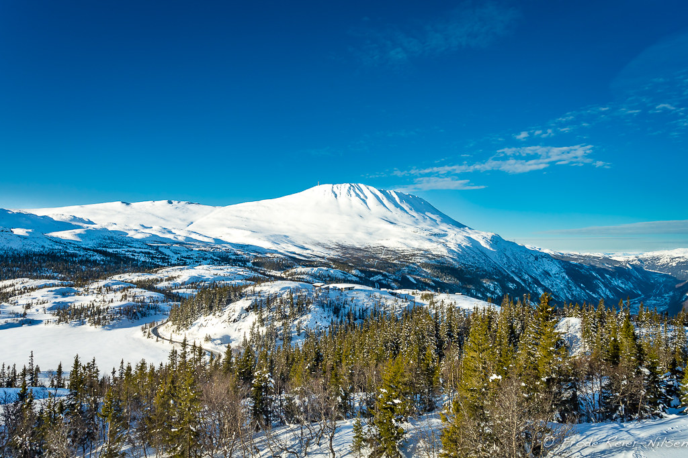

Gaustatoppen
Гаустатоппен является самой высокой горой в графстве Телемарк в Норвегии, которая находится в муниципалитете Тинн и Хьяртдаль. Вид с вершины впечатляет, так как можно увидеть площадь около 60 000 км², одну шестую часть материка Норвегии.